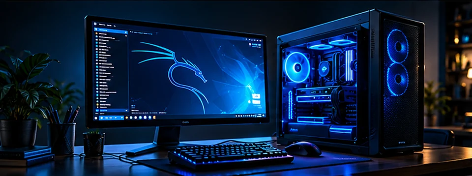

Kompiuterių priežiūra
Diagnostika, remontas, „Windows“ ir „Linux“ sistemų diegimas bei priežiūra.
IT SPRENDIMAI IR TECHNOLOGIJŲ ATRADIMAI
IT sprendimai, kibernetinis saugumas ir praktinės žinios privatiems asmenims bei verslui. Nuo kompiuterio priežiūros iki tinklų ir saugumo projektų.

Diagnostika, remontas, „Windows“ ir „Linux“ sistemų diegimas bei priežiūra.
Namų ir įmonių tinklų įrengimas, konfigūravimas bei ryšio problemų sprendimas.
Saugumo konsultacijos, tinklų apsauga ir autorizuotas sistemų vertinimas.
Tinklai, „Linux“, kibernetinis saugumas. Praktinės programos dar rengiamos.
Paslaugų prieinamumą ir darbų apimtį aptarsime individualiai. Mokymai ir laboratorija vystomi.
SUJUNGIAME ŽINIAS IR SPRENDIMUS
Šiuolaikinės technologijos, aiškus požiūris ir dėmesys tam, kas svarbu jūsų sistemoms.
„Linux“, tinklai, automatizavimas ir DI agentai. Ruošiame erdvę eksperimentams ir praktinėms demonstracijoms.
Aptarti idėjąAPIE MUS
MB „LBitas“ — Lietuvos IT įmonė, jungianti praktinius sprendimus ir technologinį švietimą. Mūsų tikslas — padėti suprasti technologijas ir naudoti jas užtikrinčiau.
ATSAKINGAS POŽIŪRIS
Konsultacijos, tinklų apsauga ir sistemų saugumo vertinimas. Autorizuoti testai atliekami tik turint savininko leidimą ir iš anksto sutartą darbų apimtį.
MOKYTIS. IŠBANDYTI. SUPRASTI.
Planuojame praktinius tinklų, „Linux“ ir kibernetinio saugumo mokymus. Programas ir datas paskelbsime, kai jos bus parengtos.
Planuojama · registracija dar nevyksta05 / KONTAKTAI
Kompiuteris, tinklas ar nauja idėja? Pradėkime nuo aiškaus problemos aprašymo.
LBitasx@gmail.comForma paruoš laišką jūsų el. pašto programoje. Laišką išsiųsite patys; svetainė duomenų nesaugo.